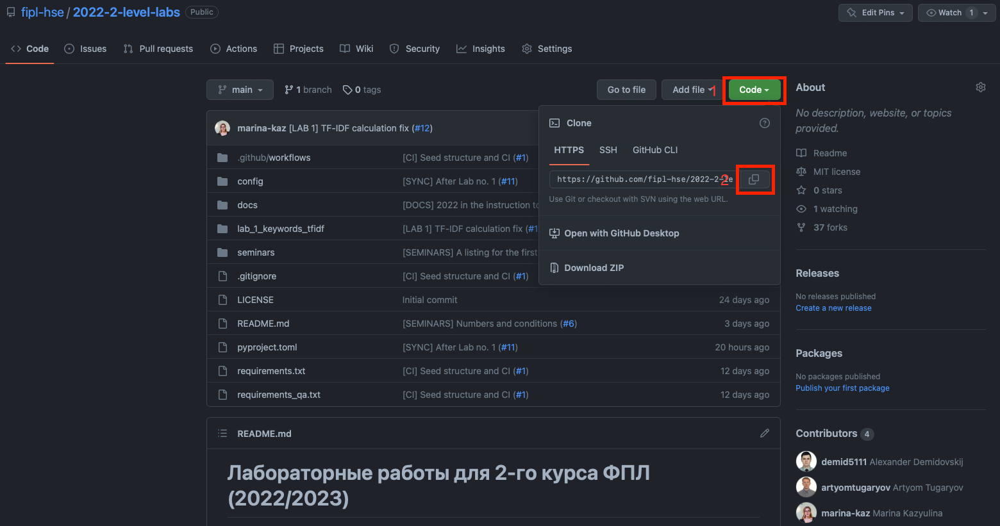
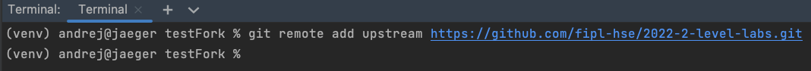
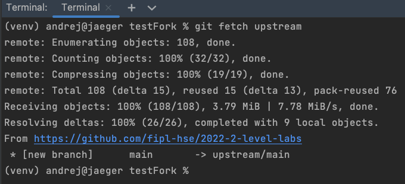

Обновление форка
В процессе прохождения курса в основной репозиторий будут добавляться изменения (новые лабораторные работы, изменения в тестах, исправления ошибок и т.д.) — эти изменения не будут автоматически появляться в сделанных форках.
Чтобы добавить изменения в Ваш форк из основного репозитория, выполните следующие шаги:
Откройте сайт репозитория, который Вам прислал преподаватель.
Нажмите кнопку
Code, выберитеHTTPSи нажмите кнопку копирования:Откройте терминал в среде разработки PyCharm:

В терминале выполните команду
git remote add upstream <ссылка-на-основной-репозиторий>:В терминале выполните команду
git fetch upstream:
Important
Обратите внимание, что ссылка на скриншоте выше указывает на родительский репозиторий.
В терминале выполните команду
git merge upstream/main --no-edit:
Note
В зависимости от количества изменений вывод команды может отличаться от того, что на скриншоте выше.
В результате выполнения этих команд в Вашем локальном форке появятся последние изменения из основного репозитория.
Больше информации о командах, описанных выше, можно найти в официальной документации по Git.
Обновление форка с помощью комментария в Pull Request
Форк может находится в нескольких состояниях по отношению к upstream репозиторию:
Форк и upstream выровнены по состояниям.
В upstream появились новые изменения, которых ещё нет в форке:
Например, при добавлении исправлений для уже существующих файлов.
В upstream появились новые изменения, которых ещё нет в форке + были изменения в форке, которые конфликтуют с изменениями из upstream:
Например, когда в upstream была добавлена одна из лабораторных работ как образцовая.
Для случаев 2 и 3 предусмотрены механизмы автоматического обновления через комментарий в Pull Request.
Для случая 2:
Обновление происходит с помощью комментария, содержащего подстроку
/update:get_newВ форке появятся изменения из upstream репозитория.
Случай 3 подразделяется на два сценария исходя из необходимости сохранения лабораторной работы студента в форке:
Если необходимо оставить версию лабораторной работы из форка, то обновление происходит с помощью комментария, содержащего подстроку
/update:keep_fork:В форке появятся изменения из upstream, не касающиеся
main.pyиstart.pyфайлов для лабораторных работ:Файлы
main.pyиstart.pyсохранятся так, как они есть в форке.Все остальные конфликты будут разрешены в пользу upstream изменений.
Если необходимо залить в форк версию лабораторной работы из upstream, то обновление происходит с помощью комментария, содержащего подстроку
/update:keep_upstreamФорк будет выровнен по состоянию с upstream.
Все конфликты будут разрешены в пользу upstream изменений.